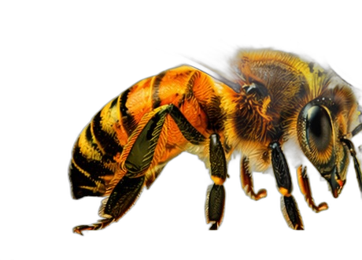

No venimos a prometer,
venimos a trabajar.
— Partido político de ámbito municipal · Molina de Segura
RAS es el partido de «La Abeja»: un partido por y para el pueblo de Molina de Segura. Nacemos para defender los intereses de los vecinos, los autónomos y las empresas locales, con cercanía, sentido común y tolerancia cero con la corrupción.
Somos independientes de los partidos nacionales: aquí mandan Molina y su gente. No venimos a prometer, venimos a trabajar. Molina de Segura merece más.
— Programa político
Un programa cercano, local e independiente de los partidos nacionales. Por y para el pueblo de Molina de Segura.
Más atención institucional · Prioridad a las empresas locales en los contratos públicos · Fomento del empleo y del desarrollo industrial.
Bajada de impuestos injustos y «encubiertos» · Revisión del IBI y de las tasas municipales · Impuestos acordes a los servicios reales.
Más policía en las calles · Mejor gestión de los recursos y del personal · Soluciones reales al aumento de la violencia y la inseguridad.
Referéndums en las decisiones importantes · Escuchar a todos los vecinos · Un partido abierto a todas las ideologías.
— Quiénes somos
Somos un partido político de ámbito local nacido en Molina de Segura en 2025. No somos la alternativa — somos el cambio que Molina necesita. Transparencia total, acción directa, resultados concretos.

— Afíliate